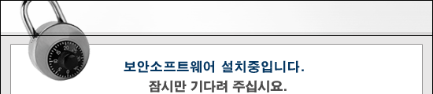
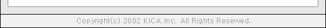

|  |
|
|
| |
한국정보인증(주)의 보안 소프트웨어를
설치중입니다.
이미 다운로드를 받으신 분도 새버전을 설치중이니 기다려 주세요.
컴퓨터 및 네트웍의 상황에 따라 많은 시간이 소요되는 경우가 있습니다.
잠시 기다려 주십시오....
설치도중 '보안경고' 창이 뜨면 "예" 눌러서 S/W를 설치하세요.
만약 오랜 시간이 지나도 설치되지 않으면 다음과 같이
보안 소프트웨어 설치 프로그램를 받아서 실행한 후에 다시 접속하여 주십시오.
▶
보안 소프트웨어 설치 프로그램 받기
▶ 보안 소프트웨어 설치 프로그램을 바탕화면에 저장하십시오.
▶ 실행중인 웹브라우저 모두 종료하십시오.
▶ 바탕화면에 저장한 보안 소프트웨어 설치 프로그램을 실행하십시오.
|
|
|
|  |
|